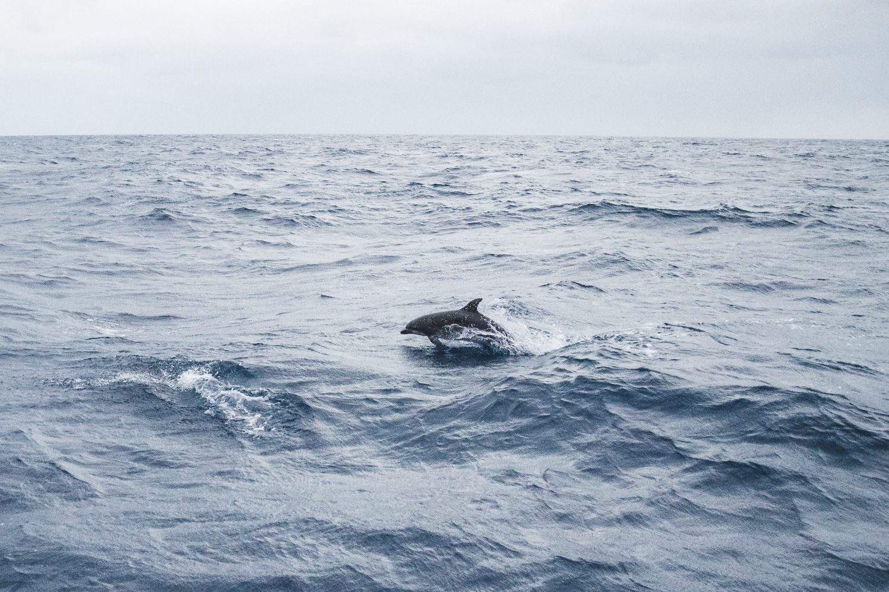
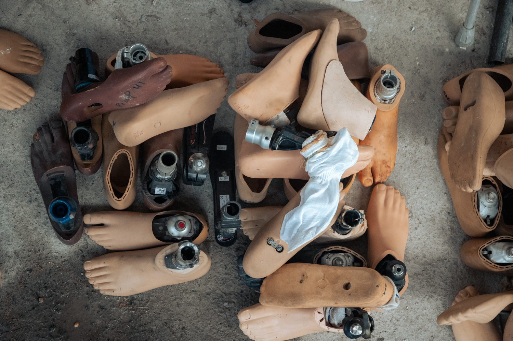
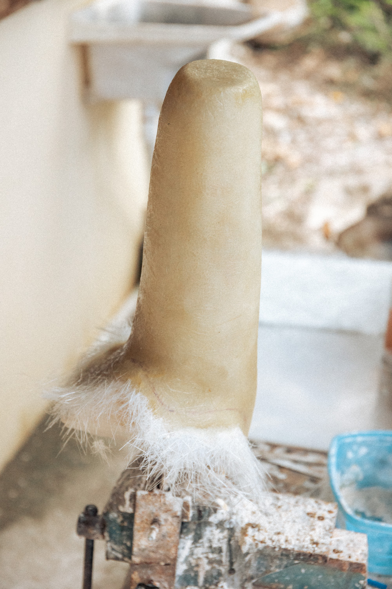
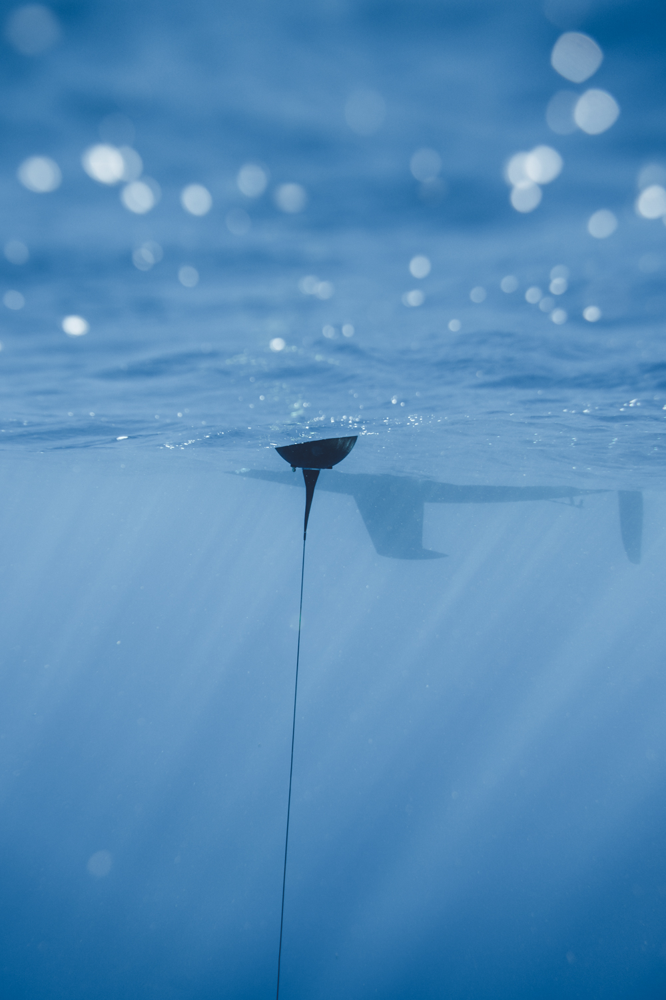
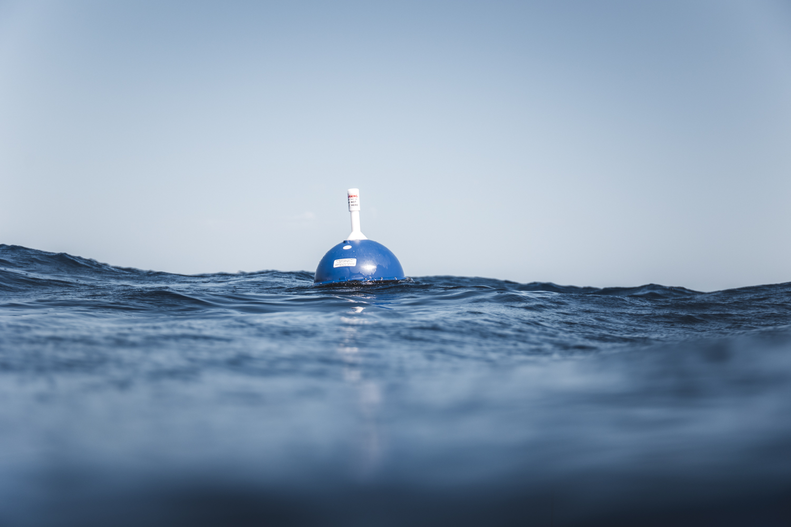

Objectif : recueillir des sons et des images de cétacés pour entrainer des algorithmes

Les chercheurs mettent en place une base de données de sons de cétacés. A ce titre, ils ont besoin de recueillir des enregistrements sonores et d'identifier l’espèce correspondante. Ils sont donc à la recherche de moyens d'accroître leur bibliothèque et nous travaillerons conjointement à l’élaboration d’un protocole. Celui-ci devra permettre à n’importe quel plaisancier d’embarquer du matériel d’écoute et de pouvoir simplement indiquer les espèces qu’ils auront observées. Nous avons à bord un hydrophone et nous serons chargés de prendre en photo les animaux que nous rencontronsq afin de corréler sons et observation visuelle. Notre travail se poursuivra à terre avec un retour d’expérience et une participation à l’élaboration du protocole mentionné précédemment.


GNSS : acronyme désignant les systèmes de positionnement par satellite dont le GPS, Galileo, ou encore, GLONASS font partie.
"Une analyse adaptée des signaux bruts enregistrés par une antenne réceptrice permet de restituer les effets induits par l’atmosphère terrestre sur la propagation des signaux en provenance des satellites. De ces effets, on arrive à quantifer la teneur en vapeur d’eau de la colonne atmosphérique au-dessus de l’antenne réceptrice."
Pierre BOSSER
Ce projet a donc pour objectif de collecter des données météorologiques dans des endroits où il n’y a pas d’instruments à poste. Nous avons à bord un dispositif autonome comprenant une antenne satellite qui permet de mesurer entre autres, la quantité de vapeur d’eau dans l’air située dans les couches d’atmosphère au-dessus de nos têtes. L’exploitation de ces mesures par les chercheurs leur permet ensuite d’améliorer leurs connaissances sur le climat ainsi que son évolution afin de mieux comprendre les effets du changement climatique.
Nom : Keep Walking Association
Siège : Provence-Alpes-Côte d'Azur
Objectif : Équiper les habitants amputés de la Dominique en prothèses
Nous avons eu le plaisir de prendre part à la flotille 2024 de Nav’Solidaires ! Cette association achemine en effet les pothèses qu'elle collecte à la voile. Nous nous sommes rendu en Dominique pour en livrer chez Keep Walking Association.
Nous avons passé deux semaines chez KWA (Keep Walking Association) et avons pu apporter notre aide pour améliorer leur visibilité. Nous avons réalisé plusieurs vidéos, postées sur leur compte Instagram. Nous avons également rafraîchi la cagnotte et le site web de l’association.
Nous avons rédigé un rapport suite à notre expérience. Il est disponible sur notre compte LinkedIn.


Nom : Météo France
Siège : Brest
Objectif : Collecter des données de pression, de température et de vitesse des courants
Au cours de notre aventure, nous avons collaboré avec Météo France en participant au programme E-SurfMar d’Eumetnet (European Meteorological Network), un réseau regroupant 33 services météorologiques européens. Ce programme européen coordonne les observations de surface en Atlantique nord afin d’améliorer la prévision météorologique.
Dans ce cadre, nous avons embarqué à bord de notre voilier des bouées dérivantes mesurant en temps réel la pression atmosphérique de surface, la température de la mer ainsi que les courants marins. Notre parcours traversant des zones non couvertes par ce type de bouées, nous les avons déposé sur des positions permettant une couverture plus complète de l’Atlantique nord. Pour compléter ces actions, notre mission sera également d’aller récupérer les bouées en fin de vie qui s’échouent sur les côtes de l’Atlantique. Selon leur état une nouvelle mission pourra leur être confié, sinon, elles seront recyclées.
Cette mission s’inscrit donc parfaitement dans notre volonté d’aider la recherche sur le climat et vient s’ajouter à notre projet de mesure de la vapeur d'eau atmosphérique par satellite dans le même domaine. Retrouvez notre retour d’expérience sur notre profil LinkedIn !
Vous pouvez retrouver la position des deux bouées en suivant ces liens : bouée 1 & bouée 2. Retrouvez notre retour d’expérience sur notre profil LinkedIn !

